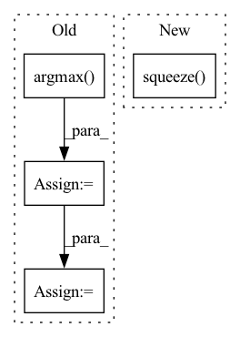

Pattern ID :13235
Before Change
with torch.no_grad():
preds = self._model(t)
preds = preds.argmax(dim=1)
logging.debug(f"Preds shape: {preds.shape}")
preds_indexes = list(preds.numpy().astype(int))
preds_classes = [self._groundtruth[idx] for idx in preds_indexes]
pred = ""
return pred.join([str(s) for s in preds_classes])
After Change
with torch.no_grad():
pred = self.model(t.unsqueeze(0))
result = self.tokenizer.translate(pred.squeeze( 0) .argmax(1))
return result
In pattern: SUPERPATTERN
Frequency: 3
Non-data size: 4
Instances Fragment ID: 44641433
Project Name: andreybicalho/vrpdr
Commit Name: daf497818875e24e9502e761bea83e6cbed1f909
Time: 2020-06-17
Author: andreybicalho@gmail.com
File Name: src/ocr.py
M Class Name: OCR
N Class Name: OCR
M Method Name: predict(2)
N Method Name: predict(2)
M Parent Class:
N Parent Class:
M File Name: src/ocr.py
N File Name: src/ocr.py
M Start Line: 36
M End Line: 53
N Start Line: 45
N End Line: 50
Before Change
pred_rgb = pred_rgb.argmax(dim=2).squeeze() // [T, h, w]
pred_then_colorized_vis = colorize_semseg(postprocess_mask(pred_rgb), num_classes=SYNPICK_CLASSES) // [T, 3, h, w]
frames_seg = [seg_model(frames[:, i]).argmax(dim=1) for i in range(frames.shape[1])]
frames_seg = torch.stack(frames_seg, dim=1) // [1, 1, h, w]
input_seg = frames_seg[:, :VIDEO_IN_LENGTH] // [1, t, 1, h, w]
pred_mask = pred_mask_model.pred_n(input_seg, pred_length=VIDEO_PRED_LENGTH)
pred_mask = pred_mask.argmax(dim=2) // [1, T, 1, h, w]
pred_mask = postprocess_mask(torch.cat([input_seg, pred_mask], dim=1).squeeze()) // [T, h, w]
pred_mask_vis = colorize_semseg(pred_mask, num_classes=SYNPICK_CLASSES) // [T, 3, h, w]
After Change
pred_rgb = pred_rgb_model.pred_n(input, pred_length=VIDEO_PRED_LENGTH)
pred_rgb = torch.cat([input, pred_rgb], dim=1) // [1, T, 3, h, w]
pred_rgb_vis = postprocess_img(pred_rgb.squeeze(dim=0) ) // [T, 3, h, w]
pred_rgb = torch.stack([seg_model(pred_rgb[:, i]) for i in range(pred_rgb.shape[1])], dim=1)
pred_rgb = pred_rgb.argmax(dim=2).squeeze() // [T, h, w] Fragment ID: 44641448
Project Name: ais-bonn/vp-suite
Commit Name: 13016d4ab8ba4f8e7ee087155a6c5171f4d00ba3
Time: 2021-08-02
Author: boltres@ais.uni-bonn.de
File Name: scripts/visualize_4_way.py
M Class Name: AnonimousClass
N Class Name: AnonimousClass
M Method Name: visualize_4_way(1)
N Method Name: visualize_4_way(1)
M Parent Class:
N Parent Class:
M File Name: scripts/visualize_4_way.py
N File Name: scripts/visualize_4_way.py
M Start Line: 16
M End Line: 73
N Start Line: 17
N End Line: 74
Before Change
pos_roi_per_image = np.round(self.n_sample * self.pos_ratio)
iou = box_iou(roi, target_box)
// 每个roi和target_boxes的最大iou索引
gt_assignment = iou.argmax(axis=1)
// 每个roi和n个tartget_box的最大iou
max_iou = iou.max(axis=1)
// 将所有种类索引+1(所有label>=1,0为下面的负样本所准备的),并且此时为所有roi赋予label.值为与其iou最大的target_box的label值
gt_roi_label = label[gt_assignment] + 1 // (roi.shape[0],)
// 获取那些IOU大于pos_iou_thresh的roi索引
pos_index = np.where(max_iou >= self.pos_iou_thresh)[0]
pos_roi_per_this_image = int(min(pos_roi_per_image, pos_index.size))
if pos_index.size > 0:
pos_index = np.random.choice(pos_index, size=pos_roi_per_this_image, replace=False)
// 获取那些IOU在[neg_iou_thresh_lo, neg_iou_thresh_hi)区间的roi索引
// 其实这里感觉分配的不是很合理,因为IOU=0.49与0.51在数值上区别很小.人眼更是几乎看不出来(除非写轮眼) TODO 待实验 hi↑ lo↓
neg_index = np.where((max_iou < self.neg_iou_thresh_hi) & (max_iou >= self.neg_iou_thresh_lo))[0]
// 计算每张图片中理论上的负样本个数
neg_roi_per_this_image = self.n_sample - pos_roi_per_this_image
neg_roi_per_this_image = int(min(neg_roi_per_this_image, neg_index.size))
if neg_index.size > 0:
neg_index = np.random.choice(neg_index, size=neg_roi_per_this_image, replace=False)
// 将正负样本的roi索引合并到一起
keep_index = np.append(pos_index, neg_index)
// 从所有roi中挑选出正负样本的label
gt_roi_label = gt_roi_label[keep_index]
// 将负样本的label置为0
gt_roi_label[pos_roi_per_this_image:] = 0
sample_roi = roi[keep_index]
// 计算修正系数 roi和其最大iou的target_box的loc
gt_roi_loc = box2loc(sample_roi, target_box[gt_assignment[keep_index]])
// 这里的减均值除以方差以及非训练阶段roi网络最后出来的roi_loc还要乘方差加均值
gt_roi_loc = ((gt_roi_loc - np.array(loc_normalize_mean, np.float32)) / np.array(loc_normalize_std, np.float32))
return sample_roi, gt_roi_loc, gt_roi_label
After Change
// neg_index = np.random.choice(neg_index, size=neg_roi_per_this_image, replace=False)
neg_index = neg_index[torch.randperm(neg_num)[:neg_roi_per_this_image]]
// 将正负样本的roi索引合并到一起
keep_index = torch.cat((pos_index, neg_index)).squeeze()
// 从所有roi中挑选出正负样本的label
gt_roi_label = gt_roi_label[keep_index]
// 将负样本的label置为0
gt_roi_label[pos_roi_per_this_image:] = 0 Fragment ID: 44641435
Project Name: pangkun248/faster-rcnn-pytorch
Commit Name: 811d49713cf13070465c16e51d96db0077647739
Time: 2021-08-26
Author: 39581901+pangkun248@users.noreply.github.com
File Name: utils/creator_tool.py
M Class Name: ProposalTargetCreator
N Class Name: ProposalTargetCreator
M Method Name: __call__(4)
N Method Name: __call__(6)
M Parent Class: object
N Parent Class: object
M File Name: utils/creator_tool.py
N File Name: utils/creator_tool.py
M Start Line: 176
M End Line: 224
N Start Line: 231
N End Line: 281